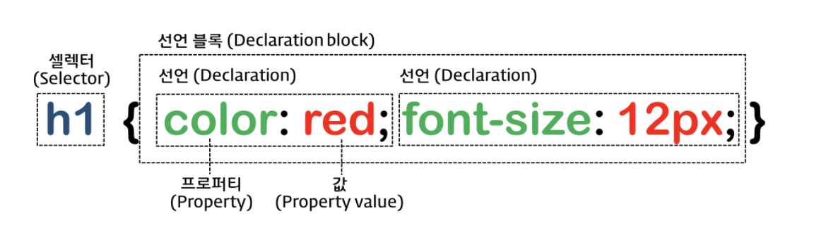

CSS(Cascading Style Sheet) 라고도 하며, 줄여서 스타일(Style)이라고도 한다.
Cascading(계단식) Style(모양) Sheet(기록패널)
별도의 css 파일을 생성하여 여러 HTML 문서에서 link 요소로 적용하는 방법
<link rel="stylesheet" href="서식파일이름.css">
현재 문서에 있는 요소(Element)에만 스타일을 적용하는 방법
현재 문서 내 style 요소의 안에 스타일 내용을 기재하는 방법
<style>
/* 내부 스타일 */
</style>
해당 요소에 직접 스타일을 적용하는 방법
해당 요소에 style 속성(attribute)에 직접 지정하는 방법으로서 재사용성이 가장 좋지 않지만, 다른 스타일 지정 방식보다는 우선 순위가 가장 빠르다.
<h3 style="color:red">제목</h3>

CSS 스타일을 부여할 대상 요소
| 선택자 이름 | 선택자 문법 | 설명 | 예시 |
|---|---|---|---|
| 전체 선택자 | * { } | 모든 요소(Element)를 스타일을 부여할 대상으로 선택 | * { margin:0; padding:0; } |
| 태그 선택자 | tagname { } | 특정 요소(Element)를 스타일 부여 대상으로 선택 | h3 { color:blue } |
| 클래스 선택자 | .클래스명 { } | 특정 클래스가 있는 요소(Element)를 스타일 부여 대상으로 선택 | .dp1 { text-align:center; } |
| 아이디 선택자 | #아이디명 { } | 특정 아이디가 지정된 요소(Element)를 스타일 부여 대상으로 선택 | #hd { width:1200px; } |
| 복수 선택자 | 선택자1, 선택자2 { } | 여러 요소를 한 번에 스타일을 부여할 대상으로 선택 | h1,h2,h3 { font-size:14px; } |
| 속성 선택자 | [속성명] { } | 해당 속성(태그속성)이 존재하는 요소를 스타일 부여할 대상으로 선택 | [href] { text-decoration:none; } |
| 속성 일치 선택자 | [속성명="값"] { } | 해당 속성(태그속성)의 값이 지정한 값과 일치하는 요소를 스타일 부여할 대상으로 선택 | [target="_blank"] { text-decoration:none; } |
| 속성 접두 선택자 | [속성명^="값"] { } | 해당 속성(태그속성)의 값이 지정한 값으로 시작하는 요소를 스타일 부여할 대상으로 선택 | img[src^="kim"] { border:3px; } |
| 속성 접미 선택자 | [속성명$="값"] { } | 해당 속성(태그속성)의 값이 지정한 값으로 끝나는 요소를 스타일 부여할 대상으로 선택 | [src$=".jpg"] { border:5px solid red; } |
| 속성 포함 선택자 | [속성명*="값"] { } | 해당 속성(태그속성)의 값이 지정한 값을 포함하는 요소를 스타일 부여할 대상으로 선택 | [src*="dall"] { border:5px solid red; } |
| 부모자식 선택자 | elem1 > elem2 { } | elem1의 안에 있는 elem2 자식 요소를 스타일 부여할 대상으로 선택 | #lst > li { } |
| 조상후손 선택자 | elem1 elem2 { } | elem1의 안에 있는 elem2 후손 요소를 스타일 부여할 대상으로 선택 | #lst li { } |
| 동생(next) 선택자 | elem1 + elem2 { } | elem1의 바로 다음에 나오는 elem2 동생 요소 하나만을 스타일 부여할 대상으로 선택 | .first + li { } |
| 동생들(nextAll) 선택자 | elem1 ~ elem2 { } | elem1의 다음에 나오는 elem2 동생들 요소를 스타일 부여할 대상으로 선택 | .first ~ li { } |
| 자기 자신 선택자 | elem1elem2 { } | elem1과 elem2가 모두 만족하는 요소를 스타일 부여할 대상으로 선택 | .sub.mid { } |
| 링크 선택자 | :link { } | href 속성이 있는 요소를 스타일 부여할 대상으로 선택 | a:link { } |
| 방문 했던 요소 선택자 | :visited { } | href 속성의 값이 방문했던 적이 있는 주소이면 스타일 부여할 대상으로 선택 | a:visited { } |
| 롤오버 선택자 | :hover { } | 해당 요소에 마우스 포인터를 올리면 그 요소를 스타일 부여할 대상으로 선택 | .box:hover { } |
| 셀렉트 선택자 | :active { } | 해당 요소에 마우스 포인터를 올리고 클릭하고 있으면, 그 요소를 스타일 부여할 대상으로 선택 | .box:active { } |
| 커서 선택자 | :focus { } | 해당 요소에 커서가 옮겨지면, 그 요소를 스타일 부여할 대상으로 선택 | input:focus { } |
| 체크 선택자 | :checked { } | 해당 체크박스나 라디오 버튼 요소에 체크를 하면, 그 요소를 스타일 부여할 대상으로 선택 | input:checked { } |
| 폼 유효성 선택자 | :invalid { } | 해당 폼 요소의 유효성 검사시 유효하지 않은 데이터 입력시에 그 요소를 스타일 부여할 대상으로 선택 | input:invalid { } |
| 사용 가능한 폼 요소 선택자 | :enabled { } | 해당 폼 요소 중에서 사용이 가능한 요소를 스타일 부여할 대상으로 선택 | input:enabled { } |
| 사용 불가능한 폼 요소 선택자 | :disabled { } | 해당 폼 요소 중에서 사용이 불가능한 요소를 스타일 부여할 대상으로 선택 | input:disabled { } |
| 첫째 선택자 | elem:first-child { } | 해당 요소 중에서 첫 번째 요소를 스타일 부여할 대상으로 선택 | li:first-child { } |
| 첫째 요소 선택자 | elem:first-of-type { } | 첫 번째 요소 중에서 해당 요소를 스타일 부여할 대상으로 선택 | li:first-of-type { } |
| 마지막 선택자 | elem:last-child { } | 해당 요소 중에서 마지막 번째 요소를 스타일 부여할 대상으로 선택 | li:last-child { } |
| 마지막 요소 선택자 | elem:last-of-type { } | 마지막 번째 요소 중에서 해당 요소를 스타일 부여할 대상으로 선택 | li:last-of-type { } |
| 특정 번째 선택자 | elem:nth-child(위치숫자) { } | 해당 요소 중에서 특정 번째 요소를 스타일 부여할 대상으로 선택 | li:nth-child(2) { } li:nth-child(2n) li:nth-child(even) li:nth-child(2n+1) li:nth-child(odd) |
| 특정 번째 요소 선택자 | elem:nth-of-type(위치숫자) { } | 특정 번째 요소 중에서 해당 요소를 스타일 부여할 대상으로 선택 | li:nth-of-type(2) { } |
| 하나 뿐인 요소 선택자 | elem:only-child { } | 특정 요소가 하나만 존재하는 요소를 스타일 부여할 대상으로 선택 | li:only-child { } |
| 자식이 없는 요소 선택자 | elem:empty { } | 해당 요소 중에서 비어 있는 요소를 스타일 부여할 대상으로 선택 | li:empty { } |
| 이전 영역 선택자 | elem:before { } | 해당 요소의 안쪽에서 그 앞을 스타일 부여할 대상으로 선택 | li:before { content:"앞 "; } |
| 다음 영역 선택자 | elem:after { } | 해당 요소의 안쪽에서 그 뒤를 스타일 부여할 대상으로 선택 | li:after { content:"뒤 "; } |
| 첫 줄 선택자 | elem::first-line { } | 해당 요소의 첫 번째 줄을 스타일 부여할 대상으로 선택 | .wrap p::first-line { color:red; } |
| 첫 글자 선택자 | elem::first-letter { } | 해당 요소의 첫 글자를 스타일 부여할 대상으로 선택 | .wrap p::first-letter { font-size:60px; } |
| 글자/문단 범위 선택자 | elem::selection { } | 해당 요소의 글자의 범위를 선택하면, 그 범위 안에 있는 글자를 스타일을 부여할 대상으로 선택 | .wrap p::selection { background-color:yellow; } |
| 부정 선택자 | elem:not(조건) { } | 해당 요소의 주어진 조건이 만족되지 않는 요소를 스타일을 부여할 대상으로 선택 | .ck:not(:checked) + label { font-size:14px; color:red; } |
선택자의 우선 순위는 아이디 > 클래스 > 태그 순이다.
단계적으로 선택자를 기입하되, 단순한 선택자 부터 기입하고, 복잡한 선택자를 아래에 배치한다.
범위가 크거나 부모의 선택부터 하고, 그 다음에 범위가 작거나 세밀한 선택을 하도록 해야 한다.
아이디는 한 문서 내에서 중복되어서는 안된다.
같은 서식이 부여되는 경우는 가급적 클래스를 활용하여 같은 서식을 부여하도록 한다.
| 속성명 | 도메인 | 설명 | 예시 |
|---|---|---|---|
| background-color | transparent | 컬러명 | RGB HEX(3/6) | RGB(0-255,0-255,0-255) | HSL(Hue,Sturation%,Lightness%) | 배경색을 지정하는 속성 | background-color:#000 background-color:#000000 background-color:black background-color:rgb(0,0,0) background-color:rgba(0,0,0,1) background-color:hsl(240,0%,0%) background-color:hsla(240,0%,0%,1) |
| background-image | none | url(이미지경로) | 배경 이미지를 지정하는 속성 | background-image:url(./images/ive.png), url(./images/jungle.jpg) |
| background-repeat | repeat | repeat-x | repeat-y | no-repeat | 배경이미지의 반복 속성 | background-image:url(./images/ive.png), url(./images/jungle.jpg) |
| background-position | 가로위치 세로위치로 지정하되, 0 0 | top | bottom | left | right | middle | 숫자(+/-)px/% | 배경이미지 위치 지정 속성 | background-position:left bottom background-position:-200px -100px |
| background-attachment | scroll | fixed | local | 배경이미지 고정 유무 지정 속성 | background-attachment:fixed |
| background-origin | padding-box | border-box | content-box | 배경이미지의 원점 기준 지정 속성 | background-origin:content-box |
| background-size | auto | 가로크기 세로크기 | cover | contain | 배경이미지의 크기 지정 속성 | background-size:100px 200px, 200px 400px |
| background-clip | padding-box | border-box | content-box | 배경이미지의 영역을 어디까지 표시할지 지정 속성 | background-clip:border-box |
| background | bg-color bg-image position/bg-size bg-repeat bg-origin bg-clip bg-attachment | 배경에 모든 세부속성을 한 꺼번에 지저하는 통합 속성 | background-clip:border-box |
| filter | blur(px) &| brightness(%) &| contrast(%) &| grayscale(%) &| invert(%) &| opcacity(%) &| saturate(%) &| sepia(%) &| drop-shadow(x y blur px) &| hue-rotate(deg) | 배경이나 이미지에 필터 효과를 적용하는 속성 | filter:blur(3px) hue-rotate(45deg) opacity(85%) |
| 속성명 | 도메인 | 설명 | 예시 |
|---|---|---|---|
| @font-face | @font-face { font-family:"폰트별칭"; src:url(폰트파일이름을포함한웹폰트의경로); } | 웹페이지에서 적용할 폰트를 규정하는 규칙 | @font-face { font-family:"ntg"; url(./font/notosans.woff); } |
| font-famliy | font-family:"폰트별칭"[, 대체폰트1, 기본웹폰트]; | 폰트 규칙(@font-face) 에서 규정한 폰트를 적용하는 속성. 기본웹폰트에는 serif(명조), sans-serif(고딕), cursive(궁서), fantasy(장식), monospace(장평같음) | .con { font-family:"ntg", sans-serif; } |
| color | color:색상명 | HEX(3/6) | rgb | rgba | hsl | hsla | 글자색을 지정하는 속성으로 16진수 HEX code와 여러 색 함수를 활용할 수 있음. | .con { color:deepskyblue; } .con strong { color:#333; } |
| font-size | font-size: initial | xx-small | x-small | small | medium | large | x-large | xx-large | px, cm, em, %, rem 단위 | 글자크기를 지정하는 속성으로 크기를 나타내는 키워드 또는 크기단위로 지정할 수 있음. | .con { font-size:14px; } .con strong { font-size:1.5em; } |
| font-weight | font-weight: normal | bold | bolder | lighter | 100 | 200 | 300 | 400 | 500 | 600 | 700 | 800 | 900 | 글자 두께를 지정하는 속성으로 크기를 100부터 900까지 100단위로 지정할 수 있으며, 해당 키워드도 가능함. | .con { font-size:14px; } .con strong { font-size:1.5em; } |
| font-style | font-style: normal | italic | oblique | 기울임꼴을 지정하는 속성 | .con { font-style:italic; } .con strong { font-style:normal; } |
| font-variant | font-variant: normal | small-caps | 대소문자가 있는 알파벳 계열에서 대소문자의 크기가 서로 달라서 대문자를 소문자 크기로 변경하기 위한 속성 | .con { font-variant:small-caps; } .con strong { font-variant:normal; } |
| font-stretch | font-stretch: normal | ultra-condensed | extra-condensed | condensed | semi-condensed | semi-expanded | expanded | extra-expanded | ultra-expanded | 글자의 장평(높이와 폭의 비율) 지정하기 위한 속성 | .con { font-stretch:condensed; } .con strong { font-stretch:expanded; } |
| line-height | line-height: normal | 숫자 | px, % 단위 | 한 행의 높이를 지정하기 위한 속성으로 블록요소에 지정 | .con { line-height:2; } .con strong { line-height:30px; } |
| word-spacing | word-spacing: normal | px,pt,cm,em 단위 | 어간(단어와 단어 사이의 간격)을 지정하기 위한 속성 | .con { word-spacing:10px; } .con strong { word-spacing:normal; } |
| letter-spacing | letter-spacing: normal | px,pt,cm,em 단위 | 자간(글자와 글자 사이의 간격)을 지정하기 위한 속성 | .con { letter-spacing:10px; } .con strong { letter-spacing:-2px; } |
| text-align | text-align: left | right | center | justify | 글자 정렬을 의미하며, 블록요소에 지정하는 속성 | .con { text-align:center; } .con strong { text-align:left; } |
| text-decoration | text-decoration: none | underline | overline | line-through | 글자나 특정 단어에 줄을 적용할 때 지정하는 속성 | .con { text-decoration:none; } .con strong { text-decoration:underline; } |
| text-indent | text-indent: %, px, pt, cm, em 단위 | 들여쓰기(+)/내어쓰기(-)를 지정하는 속성 | .con1 { text-indent:20px; } .con2 { text-indent:-20px; } |
| text-transform | text-transform: none | uppercase | lowercase | capitalize | 영문계열의 문자를 대/소문자로 변환해주는 속성 | .con1 { text-transform:uppercase; } .con2 { text-transform:capitalize; } |
| text-orientation | text-orientation: mixed | upright | sideways | sideways-right | use-glyph-orientation | 문단의 글자 읽는 진행방향을 설정해주는 속성 | .con1 { text-orientation:upright; } .con2 { text-orientation:sideways; } |
| direction | direction: ltr | rtl | 글자의 진행 방향을 지정하는 속성 | .con1 { direction: rtl; } |
| writing-mode | writing-mode: horizontal-tb | sideways-lr | sideways-rl | vertical-rl | vertical-lr | 글자의 표시 방향을 지정하는 속성 | .con1 { writing-mode: sideways-rl; } |
| word-break | word-break: normal | break-all | keep-all | break-word | 줄 끝에 도달했을 때 단어가 어떻게 끊어져야 하는지를 지정하는 속성 | .con1 { word-break:break-all; } .con2 { word-break:keep-all; } |
| word-wrap | word-wrap: normal | break-word | 긴 단어를 나누어 다음 줄로 넘길 수 있도록 지정하는 속성 | .con1 { word-break:break-word; } .con2 { word-break:normal; } |
| white-space | white-space: normal | nowrap | pre | pre-line | pre-wrap | 요소 내부의 공백을 처리하는 방법을 지정하는 속성 | .con1 { white-space:nowrap; } .con2 { white-space:pre; } |
| text-overflow | text-overflow: clip | ellipsis | string | 영역의 크기에 비해 흘러 넘치는 텍스트를 어떻게 처리할지 지정하는 속성 | .con1 { text-overflow:clip; } .con2 { text-overflow:ellipsis; } |
| text-shadow | text-shadow: none | h-shadow v-shadow blur-radius color | 텍스트에 그림자를 지정하는 속성 | .con1 { text-shadow:2px 2px 8px #ff0000; } .con2 { text-shadow:-3px -3px 4px #00ff00; } |
| 속성명 | 도메인 | 설명 | 예시 |
|---|---|---|---|
| display | display : block | inline | inline-block | none | 콘텐츠의 출력 방식을 지정하는 속성 | display:block; |
| opacity | opacity : 0~1 숫자 | 콘텐츠 요소의 불투명도를 지정하는 속성 | opcity:0.5; |
| visibility | visibility : visible | hidden | collapse | 콘텐츠의 보일지 숨길지를 지정하는 속성 | visibility:hidden display:none은 출력을 하지 않으므로 크기가 설정되지 않지만, visibility:hidden은 보이지 않을 뿐 크기가 지정되어 그 자리를 차지하고 있음. |
| width | width : auto | %, px, cm, vw 단위 | 콘텐츠 요소의 너비를 지정하는 속성 | width:100%; |
| height | height : auto | %, px, cm, vh 단위 | 콘텐츠 요소의 높이를 지정하는 속성 | height:100vh; |
| margin | margin: auto | %, px, cm 단위 | 박스의 바깥 여백를 지정하는 속성 | margin:25px; margin:20px auto; margin:10px 20px 30px 40px; |
| margin-top | margin-top: auto | %, px, cm 단위 | 박스 바깥의 위 여백를 지정하는 통합 속성 | margin-top:25px; |
| margin-right | margin-right: auto | %, px, cm 단위 | 박스 바깥의 오른쪽 여백를 지정하는 세부 속성 | margin-right:40%; |
| margin-bottom | margin-bottom: auto | %, px, cm 단위 | 박스 바깥의 아래 여백를 지정하는 세부 속성 | margin-bottom:10px; |
| margin-left | margin-left: auto | %, px, cm 단위 | 박스 바깥의 왼쪽 여백를 지정하는 세부 속성 | margin-left:40px; |
| padding | padding: auto | %, px, cm, em(rem) 단위 | 박스의 안 여백를 지정하는 통합 속성 | padding:25px; padding:20px auto; padding:10px 20px 30px 40px; |
| padding-top | padding-top: auto | %, px, cm, em(rem) 단위 | 박스 안의 위 여백를 지정하는 세부 속성 | padding-top:1rem; |
| padding-right | padding-right: auto | %, px, cm, em(rem) 단위 | 박스 안의 오른쪽 여백를 지정하는 세부 속성 | padding-right:10px; |
| padding-bottom | padding-bottom: auto | %, px, cm, em(rem) 단위 | 박스 안의 아래 여백를 지정하는 세부 속성 | padding-bottom:5%; |
| padding-left | padding-left: auto | %, px, cm, em(rem) 단위 | 박스 안의 왼쪽 여백를 지정하는 속성 | padding-left:14px; |
| border | border: px/pt크기 선모양 선색상 | 박스의 테두리를 지정하는 통합 속성 | border:2px solid #333; border:2px solid #333, 4px dashed #f00; |
| border-width | border-width: px/pt크기 | 박스의 테두리 두께를 지정하는 세부 속성 | border-width:2px; border-width:2px 4px; |
| border-style | border-style: none | hidden | dotted | dashed | solid | double | groove | ridge | inset | outset | 박스의 테두리 선 모양을 지정하는 세부 속성 | border-style:solid; border-style:solid dotted dashed hidden; |
| border-color | border-color: 컬러명 | RGB HEX(3/6) | RGB() | RGBA() | HSL() | HSLA() | 박스의 테두리 선 색상을 지정하는 세부 속성 | border-color:red; border-color:navy blue gold orange; |
| border-top | border-top: px/pt크기 선모양 선색상 | 박스의 위 테두리를 지정하는 세부 속성 | border-top:2px solid #333; |
| border-right | border-right: px/pt크기 선모양 선색상 | 박스의 오른쪽 테두리를 지정하는 세부 속성 | border-right:2px solid #333; |
| border-bottom | border-bottom: px/pt크기 선모양 선색상 | 박스의 아래 테두리를 지정하는 세부 속성 | border-bottom:2px solid #333; |
| border-left | border-left: px/pt크기 선모양 선색상 | 박스의 왼쪽 테두리를 지정하는 세부 속성 | border-left:2px solid #333; |
| border 세세속성 | border-방향-width/style/color | 박스의 테두리를 방향과 그 방향의 테두리 두께, 모양, 색상을 하나 하나 세부적으로 지정하는 세세속성 | border-left-style:solid; |
| border-raduis | border-radius: px, %, em 단위 숫자 | 박스의 모서리 둥글기를 지정하는 속성 | border-radius:10px; border-radius:10px 30px; border-radius:10px 20px 30px 40px; |
| box-sizing | box-sizing: content-box | border-box | 박스에 지정된 크기를 어디까지의 값으로 계산할지 설정하는 속성 | border-box:border-box; |
| overflow | overflow: visible | hidden | auto | scroll | 지정된 박스크기를 벗어난 흘러 넘친 콘텐츠를 어떻게 처리할지 설정하는 속성 | overflow:auto; |
| overflow-x | overflow-x: visible | hidden | auto | scroll | 지정된 박스 가로크기를 벗어난 흘러 넘친 콘텐츠를 어떻게 처리할지 설정하는 속성 | overflow-x:hidden; |
| overflow-x | overflow-y: visible | hidden | auto | scroll | 지정된 박스 세로크기를 벗어난 흘러 넘친 콘텐츠를 어떻게 처리할지 설정하는 속성 | overflow-y:scroll; |
| 속성명 | 도메인 | 설명 | 예시 |
|---|---|---|---|
| position | position : static | absolute | relative | fixed | sticky | 콘텐츠 배치 방법을 지정하는 속성 | position:relative; |
| float | float : none | left | right | 한 행에 여러 콘텐츠를 배치할 경우 그 흐름의 방향을 지정하는 속성 | float:left; |
| clear | clear : none | left | right | both | 흐름의 방향을 지정하는 float 속성을 해체할 경우 설정하는 속성 | clear:both; |
| top | top : auto | px, %, em, vh 단위 숫자 | 맨 위로 부터 떨어진 위치를 지정하는 속성 | top:50px; |
| bottom | bottom : auto | px, %, em, vh 단위 숫자 | 맨 아래 바닥으로 부터 떨어진 위치를 지정하는 속성 | bottom:15px; |
| left | left : auto | px, %, em, vw 단위 숫자 | 맨 왼쪽 시작부터 떨어진 위치를 지정하는 속성 | left:3%; |
| right | right : auto | px, %, em, vw 단위 숫자 | 맨 오른쪽 끝 부터 떨어진 위치를 지정하는 속성 | right:2%; |
| z-index | z-index : auto | 숫자 | 콘텐츠들이 겹칠 경우 레이어(우선순위)번호를 지정하는 속성 | z-index:99; |
※ position이 static이거나 relative인 경우는 margin, float, clear 속성을 활용하여 배치한다.
※ position이 absolute이거나 fixed인 경우는 left/right 중에서 하나의 속성만 이용하여 가로의 위치를 설정하고, top/bottom 중에서 하나의 속성을 이용하여 세로의 위치를 설정한다.
※ position이 absolute이거나 fixed인 경우는 여러 콘텐츠를 겹칠 수 있어 겹칠 경우 z-index의 값을 조절하여 지정하되, 앞으로 올라올 콘텐츠에는 z-index의 값을 큰수로 한다.
※ position이 absolute이면, body 요소를 기준으로 기준점이 잡히기 때문에 위치기준이 문서의 처음의 맨 위 상단으로 하므로, 부모 요소에 relative를 적용하면, 부모를 기준으로 기준점을 지정할 수 있다.
| 속성명 | 도메인 | 설명 | 예시 |
|---|---|---|---|
| list-style | list-style : none | list-style-type list-style-position list-style-image | 목록의 기호를 설정하는 속성 | list-style:none |
| list-style-type | list-style-type : none | disc | armenian | circle | decimal | georgian | hebrew | hiragana | katakana | lower-alpha | lower-greek | lower-latin | lower-roman | square | upper-alpha | upper-greek | upper-latin | upper-roman | 목록 기호의 종류를 지정하는 속성 | list-style-type: disc; |
| list-style-position | list-style-position: inside | outside | 목록 기호의 위치를 설정하는 속성 | list-style-position: inside |
| list-style-image | list-style-image: none | url | 목록 기호의 이미지를 지정하는 속성 | top:50px; |
| cursor | cursor : url(마우스포인터파일이름), auto | default | alias | all-scroll | auto | cell | col-resize | context-menu | crosshair | copy | e-resize | ew-resize | grab | grabbing | help | move | n-resize | ne-resize | nesw-resize | ns-resize | nw-resize | nwse-resize | no-drop | none | not-allowed | pointer | progress | row-resize | s-resize | se-resize | sw-resize | text | vertical-text | w-resize | wait | zoom-in | zoom-out | 마우스 포인터 모양을 지정하는 속성 | cursor:pointer; |